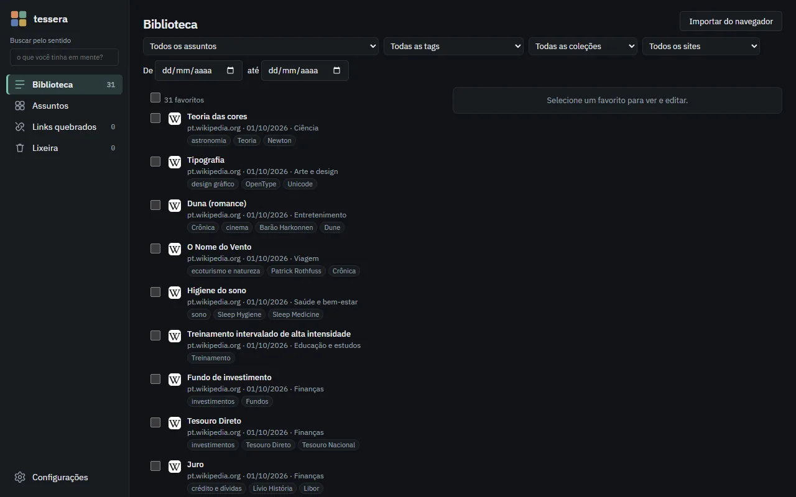

Organiza sozinho
Cada favorito ganha tags de assunto, um resumo e uma coleção sugerida. Você não preenche nada.
Pão de queijopanificaçãoculinária brasileiraPãoQueijo
Extensão gratuita para o Chrome. Ela entende do que cada página trata e acha o favorito certo, mesmo que você não lembre do título.
Sem conta · sem anúncios · sem telemetria · Edge Add-ons em breve
01 · Hoje
Pastas que você esqueceu e títulos que não lembra. A busca do navegador só acha palavra por palavra.
02 · Com o Tessera
O modelo de IA, no seu computador, lê cada página e junta o que tem o mesmo sentido. Esta é a tela de Assuntos, igual à da extensão.
03 · E a busca
“receita mineira com queijo” encontra o Pão de queijo e a Moqueca, sem você lembrar do título.
Assuntos
6 assuntos · 18 favoritos · 13 fora de assuntos
3 favoritos
Culinária brasileira
Culinária brasileira
Abrir todos em abasVer na Biblioteca
Parecidos
Favoritos fora deste assunto que se parecem com ele.
Pão de queijo
pt.wikipedia.org · 01/10/2026
Pão de queijo Pães de queijo Região Minas Gerais Ingrediente(s) principal(is) Polvilho azedo ou doce…
Moqueca
pt.wikipedia.org · 01/10/2026
Origem: Wikipédia, a enciclopédia livre.
Experimente
Cada tela abaixo reproduz a interface real do Tessera, com os favoritos e os resultados do vídeo.
Abra o popup com Alt+Shift+F ou digite sf + espaço na barra de endereço. Os resultados vêm pelo significado, com o trecho que combina destacado, mesmo em outro idioma.
A busca do navegador não encontra nada para essa frase: ela exige todas as palavras no título.
Pão de queijo
pt.wikipedia.org · 01/10/2026
Pão de queijo Pães de queijo Região Minas Gerais Ingrediente(s) principal(is) Polvilho azedo ou doce…
Moqueca
pt.wikipedia.org · 01/10/2026
Origem: Wikipédia, a enciclopédia livre.
Abra o painel lateral em qualquer site e veja, sem digitar nada, os seus favoritos sobre o mesmo assunto. Trocou de aba, a lista acompanha.
A página aberta é lida só para comparar. Nada é enviado.
developers.cloudflare.com/workers/
Cloudflare Workers
Relacionados a esta página
Overview · Cloudflare Pages docs
developers.cloudflare.com · 01/10/2026
Home /Pages Create full-stack applications that are instantly deployed to the Cloudflare global network.
Docs + Quickstarts | Render
render.com · 01/10/2026
Node.js Express Puppeteer Next.js Redwood Blitz ElysiaJS Remix Hapi NuxtJS Strapi SvelteKit Fastify…
Deploying to Vercel
vercel.com · 01/10/2026
Vercel detects your framework and builds it, or deploys your files as-is when there's no framework.
What is Terraform
developer.hashicorp.com · 01/10/2026
Manage any infrastructure Find providers for many of the platforms and services you already use in the…
Fly.io developer documentation
docs.fly.io · 01/10/2026
Check out the installation guide Step 2: Run fly launch Explore Fly.io by features Fly Machines Fly Volumes…
Não há lista de categorias pronta. O Tessera agrupa o que os favoritos têm em comum e tira o nome dos próprios membros.
Crie assuntos seus, veja “Parecidos” para completar e abra um assunto inteiro em abas.
Opcional, com a sua chave de um serviço de IA (Anthropic, OpenAI, DeepSeek, Ollama ou compatível). A resposta cita o favorito usado, e, sem base suficiente, diz que não encontrou.
Você autoriza cada finalidade e define um limite de gasto por mês.
Biblioteca
Importar do navegadorNos seus favoritos, comece por Tesouro Direto [1] e compare com Juro [2]: os dois explicam onde aplicar o dinheiro, quanto ele rende e quais são os riscos.
Favoritos enviados como base
3 favoritos
Tesouro Direto
pt.wikipedia.org · 01/10/2026 · Finanças
Juro
pt.wikipedia.org · 01/10/2026 · Finanças
Fundo de investimento
pt.wikipedia.org · 01/10/2026 · Finanças
Selecione um favorito para ver e editar.
Em movimento
Gravado com a extensão de verdade: o modelo de IA, as páginas e os resultados são reais.
Ao clicar, o vídeo é carregado do YouTube no modo de privacidade aprimorada. Antes disso, nada é enviado. Assistir no YouTube
E mais
Cada favorito ganha tags de assunto, um resumo e uma coleção sugerida. Você não preenche nada.
Pão de queijopanificaçãoculinária brasileiraPãoQueijo
Importe os favoritos do Chrome ou do Edge em um clique. A árvore original do navegador nunca é alterada.
Três aparências: Calma (espaço e leitura), Densa (muitos favoritos por tela) e Visual (peças com a cor do assunto). Em claro, escuro ou seguindo o sistema, em português e inglês.

Opcional
Um “+” discreto avisa quando uma página que você visita sempre merece ser salva. Só contadores, sem o endereço.
Opcional
Páginas dos últimos 90 dias aparecem marcadas na busca, com “Salvar” em um clique. Desligar apaga tudo.
Verifique seus favoritos e veja o motivo de cada falha. Lixeira de 30 dias; exporte e importe tudo em JSON.
Privacidade
O Tessera não tem servidor. Seus dados não passam por ninguém porque não há para onde passar.
Sem conta, sem anúncios, sem analytics, sem telemetria. Ler a política de privacidade completa
Começar
Sem cadastro. O guia mostra cada tela em detalhe.
Dúvidas
Não achou a sua? O guia explica cada tela em detalhe.
Sim. Sem plano pago, sem anúncios e sem conta. Se você usar um serviço de IA com a sua chave, o custo desse serviço é cobrado por ele, e o Tessera ajuda a controlar com um limite mensal.
Google Chrome e Microsoft Edge no computador (Windows, macOS e Linux).
Não. Com uma placa compatível, o Tessera usa um modelo maior e mais preciso (EmbeddingGemma); sem ela, usa um modelo menor que roda no processador.
Depois que o modelo é baixado, buscar e organizar funcionam sem internet. A conexão só é usada para ler páginas novas, verificar links e — se você ligar — o serviço de IA.
Não. O Tessera só lê a árvore de favoritos para importar e acompanhar os novos. Ela nunca é alterada.
Não. A busca pelo sentido, os relacionados e a organização funcionam com a IA local. A chave é só para quem quer tags mais ricas e respostas com citações.
Abra uma conversa em github.com/casheiro/tessera/issues. Não inclua dados pessoais nem a sua chave de API.